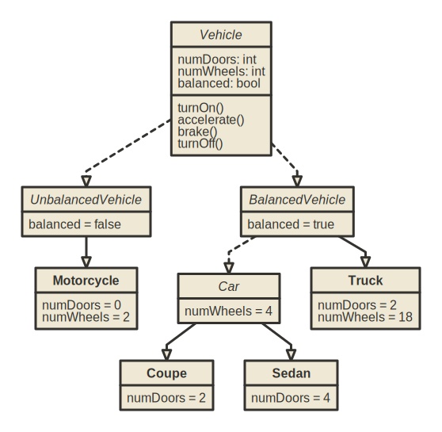

(38.9076, -77.0723)Week 3: Data Structures and Computational Complexity
DSAN 5500: Data Structures, Objects, and Algorithms in Python
Jeff Jacobs
Monday, January 29, 2024
Why We Can’t Learn These Topics Separately
Data Structure Choice \(\Leftrightarrow\) Efficiency for Task
- Do we need to be able to insert quickly?
- Do we need to be able to sort quickly?
- Do we need to be able to search quickly?
- Are we searching for individual items or for ranges?
Basic Data Structures
Recall: Primitives
boolintfloatNone- Now we want to put these together, to form‚Ķ structures! üëÄ
- Structures are the things that live in the heap; the stack just points to them
Tuples
- Fixed-size collection of \(N\) objects
- Unless otherwise specified, we’re talking about \(2\)-tuples
- Example: We can locate something on the Earth by specifying two
floats: latitude and longitude!
- But what if we don’t know in advance how many items we want to store? Ex: how can we store users for a new app?
Sequences
- In General: Mapping of integer indices to objects
x = ['a','b','c']- \(\implies\)
x[0] = 'a' - \(\implies\)
x[1] = 'b' - \(\implies\)
x[2] = 'c'
- \(\implies\)
- In Python:
list - Nice built-in language constructs for looping over lists, and especially for performing operations on each element
Looping Over Sequences
List Comprehensions: Apply Function to Each Element
- Construct new list by applying operation to each element:
- Can also filter the elements of the list with
if:
Sets
- Extremely helpful + efficient for finding unique elements:
Code
Number of animals I saw: 7- Supports all set operators from math:
Code
Animals we both saw: {'bird', 'lizard'}Code
Animals either of us saw: {'fish', 'dog', 'cat', 'bird', 'lizard'}Code
Animals I saw that you didn't see: {'cat', 'fish'}
Animals you saw that I didn't see: {'dog'}Maps / Dictionaries
- While other language like Java have lots of fancy types of Map, Python has a single type, the dictionary:
Code
dict_keys(['name', 'founded', 'coordinates', 'location'])
dict_values(['Georgetown University', 1789, (38.9076, -77.0723), {'city': 'Washington', 'state': 'DC', 'country': 'USA'}])- Be careful when looping! Default behavior is iteration over keys:
- For key-value pairs use
.items():
Complexity With Respect To A Structure
- Last week: analyzing complexity of an algorithm (no broader context)
- This week: analyzing complexity of a structure as a collection of variables + algorithms
- Object-Oriented Programming: Design pattern for “organizing” data and algorithms into structures
Looking Under the Hood of a Data Structure
- Last week we saw the math for why we can “abstract away from” the details of how a particular language works
- We want to understand these structures independently of the specifics of their implementation in Python (for now)
- So, let’s construct our own simplified versions of the basic structures, and use these simplified versions to get a sense for their efficiency
- (The “true” Python versions may be hyper-optimized, but as we saw, there are fundamental constraints on runtime, assuming \(P \neq NP\))
Tuples
Lists
- The list itself just points to a root item:
- An item has contents, pointer to next item:
Code
class MyListItem:
def __init__(self, content):
self.content = content
self.next = None
def append(self, new_item):
if self.next is None:
self.next = MyListItem(new_item)
else:
self.next.append(new_item)
def __repr__(self):
my_content = self.content
return my_content if self.next is None else f"{my_content}, {self.next.__repr__()}"So, How Many “Steps” Are Required…
- To retrieve the first element in a
MyTuple? - To retrieve the last element in a
MyTuple? - To retrieve the first element in a
MyList? - To retrieve the last element in a
MyList?
How Many Steps?
- With a
MyList:
- \(\implies\) 1 step
Code
Bo- \(\implies\) (3 steps)
- …But why 3? How many steps if the list contained 5 elements? \(N\) elements?
Pairwise-Concatenating List Elements
- Now rather than just printing, let’s pairwise concatenate:
Code
JeffJeff
JeffAlma
JeffBo
AlmaJeff
AlmaAlma
AlmaBo
BoJeff
BoAlma
BoBo- How many steps did this take? How about for a list with \(5\) elements? \(N\) elements?
Last Example: Pairwise-Concat + End Check
Code
printed_items = []
cur_pointer1 = users.root
while cur_pointer1 is not None:
cur_pointer2 = users.root
while cur_pointer2 is not None:
print(cur_pointer1.content + cur_pointer2.content)
printed_items.append(cur_pointer1.content)
printed_items.append(cur_pointer2.content)
cur_pointer2 = cur_pointer2.next
cur_pointer1 = cur_pointer1.next
check_pointer = users.root
while check_pointer is not None:
if check_pointer.content in printed_items:
print(f"Phew. {check_pointer.content} printed at least once.")
else:
print(f"Oh no! {check_pointer.content} was never printed!!!")
check_pointer = check_pointer.nextJeffJeff
JeffAlma
JeffBo
AlmaJeff
AlmaAlma
AlmaBo
BoJeff
BoAlma
BoBo
Phew. Jeff printed at least once.
Phew. Alma printed at least once.
Phew. Bo printed at least once.Generalizing
- Algorithms are “efficient” relative to how their runtime scales as the objects grow larger and larger!
- Tuple operations take 1 step no matter what
- For lists, retrieving the first element takes 1 step no matter what, but retrieving the last element takes \(n\) steps!
- Pairwise concatenation requires \(n^2\) steps!
The Complexity of Our Examples
- Tuple operations: \(O(1)\)
- Retrieving the first element of a list: \(O(1)\)
- Retrieving the last element of a list: \(O(n)\)
- Pairwise concatenation: \(O(n^2)\)
- Pairwise concatenation+check: \(O(n^2 + n) = O(n^2) \leftarrow !!!\)
- Crucial to think asymptotically to wrap our heads around this!
Doing Better Than Insertion Sort
- Intuition Break ü•≥: Finding a word in a dictionary! dsan.io/dict-lookup
How Can Merge Sort Work That Much Better!?
- With the linear approach, each time we check a word and it‚Äôs not our word we eliminate‚Ķ one measly word üòû
- But with the divide-and-conquer approach‚Ķ we eliminate üî•HALF OF THE REMAINING WORDSüî•


Merging Two Sorted Lists in \(O(n)\) Time

From Cormen et al. (2001), pg. 37
Merge Sort (Merging as Subroutine)

From Cormen et al. (2001), pg. 40
Complexity Analysis
- Hard way: re-do the line-by-line analysis we did for Insertion-Sort üò£ Easy way: stand on shoulders of giants!
- Using a famous+fun theorem (the Master Theorem): Given a recurrence \(T(n) = aT(n/b) + f(n)\), compute its:
- Watershed function \(W(n) = n^{\log_b(a)}\) and
- Driving function \(D(n) = f(n)\)
- The Master Theorem gives closed-form asymptotic solution for \(T(n)\), split into three cases: (1) \(W(n)\) grows faster than \(D(n)\), (2) grows at same rate as \(D(n)\), or (3) grows slower than \(D(n)\)
Bounding the Runtime of Merge Sort
- How about Merge-Sort? \(T(n) = 2T(n/2) + \Theta(n)\)
- \(a = b = 2\), \(W(n) = n^{\log_2(2)} = n\), \(D(n) = \Theta(n)\)
- \(W(n)\) and \(D(n)\) grow at same rate \(\implies\) Case 21:
Applying the Master Theorem When \(W(n) = \Theta(D(n))\) (Case 2)
- Is there a \(k \geq 0\) satisfying \(D(n) = \Theta(n^{\log_b(a)}\log_2^k(n))\)?
- If so, your solution is \(T(n) = \Theta(n^{\log_b(a)}\log_2^{k+1}(n))\)
- Merge-Sort: \(k = 0\) works! \(\Theta(n^{\log_2(2)}\log_2^0(n)) = \Theta(n)\)
- Thus \(T(n) = \Theta(n^{\log_b(a)}\log_2^{k+1}(n)) = \boxed{\Theta(n\log_2n)}\) üòé
Object-Oriented Programming
Breaking a Problem into (Interacting) Parts
- Python so far: “Data science mode”
- Start at top of file with raw data
- Write lines of code until problem solved
- Python in this class: “Software engineering mode”
- Break system down into parts
- Write each part separately
- Link parts together to create the whole
- (One implication:
.pyfiles may be easier than.ipynbfor development!)
How Does A Calculator Work?

(Calculator image from Wikimedia Commons)
Key OOP Feature #1: Encapsulation
- Imagine you’re on a team trying to make a calculator
- One person can write the
Screenclass, another person can write theButtonclass, and so on - Natural division of labor! (May seem silly for a calculator, but imagine as your app scales up)
Key OOP Feature #2: Abstraction
- Abstraction complements this Encapsulation: the
Screenteam doesn’t need to know the internal details ofButton(just it’s API), and vice-versa - Relevant data and functions can be “public”, irrelevant internal data and functions “private”
- (Like with type hints), Python doesn’t enforce this distinction, but (unlike with type hints) most libraries do separate public from private by a variable-naming convention…
Public, Protected, Private Attributes in Python
- [Public (default)] No underscores:
public_var - [Protected] One underscore:
_protected_var - [Private] Two underscores:
__private_var
Code
AttributeError: 'MyTopSecretInfo' object has no attribute '__the_info'Guess we can‚Äôt access it then, right? üòÆ‚Äçüí®
Key OOP Features #3-4: Inheritance, Polymorphism
- Better explained in diagrams than words (next 10 slides!), but we can get a sense by thinking about their etymology:
- “Inheritance” comes from “heir”, like “heir to the throne”
- Parent passes on [things they possess] to their children
- “Polymorphism”: Poly = “many”, Morphe = “forms”
- How does Python know what to do when we
print()? - It “just works” because
print()(through__str__()) takes on many (!) forms (!): each type of object has its own implementation of__str__()
- How does Python know what to do when we
Use Case: Bookstore Inventory Management

In Pictures
Creating Classes
- Use case: Creating an inventory system for a Bookstore
Code
class Bookstore:
def __init__(self, name, location):
self.name = name
self.location = location
self.books = []
def __getitem__(self, index):
return self.books[index]
def __repr__(self):
return self.__str__()
def __str__(self):
return f"Bookstore[{self.get_num_books()} books]"
def add_books(self, book_list):
self.books.extend(book_list)
def get_books(self):
return self.books
def get_inventory(self):
book_lines = []
for book_index, book in enumerate(self.get_books()):
cur_book_line = f"{book_index}. {str(book)}"
book_lines.append(cur_book_line)
return "\n".join(book_lines)
def get_num_books(self):
return len(self.get_books())
def sort_books(self, sort_key):
self.books.sort(key=sort_key)
class Book:
def __init__(self, title, authors, num_pages):
self.title = title
self.authors = authors
self.num_pages = num_pages
def __str__(self):
return f"Book[title={self.get_title()}, authors={self.get_authors()}, pages={self.get_num_pages()}]"
def get_authors(self):
return self.authors
def get_first_author(self):
return self.authors[0]
def get_num_pages(self):
return self.num_pages
def get_title(self):
return self.title
class Person:
def __init__(self, family_name, given_name):
self.family_name = family_name
self.given_name = given_name
def __repr__(self):
return self.__str__()
def __str__(self):
return f"Person[{self.get_family_name()}, {self.get_given_name()}]"
def get_family_name(self):
return self.family_name
def get_given_name(self):
return self.given_nameCode
my_bookstore = Bookstore("Bookland", "Washington, DC")
plath = Person("Plath", "Sylvia")
bell_jar = Book("The Bell Jar", [plath], 244)
marx = Person("Marx", "Karl")
engels = Person("Engels", "Friedrich")
manifesto = Book("The Communist Manifesto", [marx, engels], 43)
elster = Person("Elster", "Jon")
cement = Book("The Cement of Society", [elster], 311)
my_bookstore.add_books([bell_jar, manifesto, cement])
print(my_bookstore)
print(my_bookstore[0])
print("Inventory:")
print(my_bookstore.get_inventory())Bookstore[3 books]
Book[title=The Bell Jar, authors=[Person[Plath, Sylvia]], pages=244]
Inventory:
0. Book[title=The Bell Jar, authors=[Person[Plath, Sylvia]], pages=244]
1. Book[title=The Communist Manifesto, authors=[Person[Marx, Karl], Person[Engels, Friedrich]], pages=43]
2. Book[title=The Cement of Society, authors=[Person[Elster, Jon]], pages=311]Doing Things With Classes
- Now we can use our OOP structure, for example to sort the inventory in different ways!
Code
0. Book[title=The Cement of Society, authors=[Person[Elster, Jon]], pages=311]
1. Book[title=The Communist Manifesto, authors=[Person[Marx, Karl], Person[Engels, Friedrich]], pages=43]
2. Book[title=The Bell Jar, authors=[Person[Plath, Sylvia]], pages=244]Code
0. Book[title=The Communist Manifesto, authors=[Person[Marx, Karl], Person[Engels, Friedrich]], pages=43]
1. Book[title=The Bell Jar, authors=[Person[Plath, Sylvia]], pages=244]
2. Book[title=The Cement of Society, authors=[Person[Elster, Jon]], pages=311]Inheritance and Polymorphism
- Encapsulate general properties in parent class, specific properties in child classes

(You can edit this or make your own UML diagrams in nomnoml!)
Or… Is This Better?
Edit in nomnoml
Design Choices
- The goal is to encapsulate as best as possible: which objects should have which properties, and which methods?
- Example: Fiction vs. Non-Fiction. How important is this distinction for your use case?
Book
Code
from enum import Enum
class BookType(Enum):
NONFICTION = 0
FICTION = 1
class Book:
def __init__(self, title: str, authors: list[Person], num_pages: int, type: BookType):
self.title = title
self.authors = authors
self.num_pages = num_pages
self.type = type
def __str__(self):
return f"Book[title={self.title}, authors={self.authors}, pages={self.num_pages}, type={self.type}]"Code
Book[title=Ulysses, authors=[Person[Joyce, James]], pages=732, type=BookType.FICTION]
Book[title=Micromotives and Macrobehavior, authors=[Person[Schelling, Thomas]], pages=252, type=BookType.NONFICTION]Code
# class Book defined as earlier
class FictionBook(Book):
def __init__(self, title, authors, num_pages, characters):
super().__init__(title, authors, num_pages)
self.characters = characters
class NonfictionBook(Book):
def __init__(self, title, authors, num_pages, topic):
super().__init__(title, authors, num_pages)
self.topic = topicCode
Book[title=Ulysses, authors=[Person[Joyce, James]], pages=732]
Book[title=Micromotives and Macrobehavior, authors=[Person[Schelling, Thomas]], pages=252]HW1: Python Fundamentals
Appendix: The Full Master Theorem
Master Theorem: Let \(a > 0\) and \(b > 1\) be constants, and let \(f(n)\) be a driving function defined and nonnegative on all sufficiently large reals. Define \(T(n)\) on \(n \in \mathbb{N}\) by
\[ T(n) = aT(n/b) + f(n) \]
where \(aT(n/b) = a'T(\lfloor n/b \rfloor) + a''T(\lceil n/b \rceil)\) for some \(a' \geq 0\) and \(a'' \geq 0\) satisfying \(a = a' + a''\). Then the asymptotic behavior of \(T(n)\) can be characterized as follows:
- If there exists \(\epsilon > 0\) such that \(f(n) = O(n^{\log_b(a) - \epsilon})\), then \(T(n) = \Theta(n^{\log_b(a)})\)
- If there exists \(k \geq 0\) such that \(f(n) = \Theta(n^{\log_b(a)}\log_2^k(n))\), then \(T(n) = \Theta(n^{\log_b(a)}\log_2^{k+1}(n))\).
- If there exists \(\epsilon > 0\) such that \(f(n) = \Omega(n^{\log_b(a) + \epsilon})\), and if \(f(n)\) satisfies the regularity condition \(af(n/b) \leq cf(n)\) for some constant \(c < 1\) and all sufficiently large \(n\), then \(T(n) = \Theta(f(n))\).
Proof. See Cormen et al. (2001), pg. 107-114.
References
Cormen, Thomas H., Charles E. Leiserson, Ronald L. Rivest, and Clifford Stein. 2001. Introduction To Algorithms. MIT Press.
DSAN 5500 Week 3: Data Structures and Computational Complexity